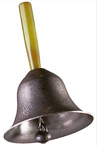

| 
| Bells
Some of the commonly used bells are church bells, carillion bells, and handbells(See Rossing 2nd Ed p280). Carillion bells have eight modes of vibration which contribute to the tone. Handbells, struck with a soft internal clapper, have a 2,0 mode which is the strike tone. The 3,0 mode is tuned to three times the frequency of the 2,0 mode and the 2,0 mode produces some second harmonic, so you have sound at the first three harmonics. Rossing (p283) shows hologram interferograms of 17 modes of a C5 (523 Hz) handbell.
|